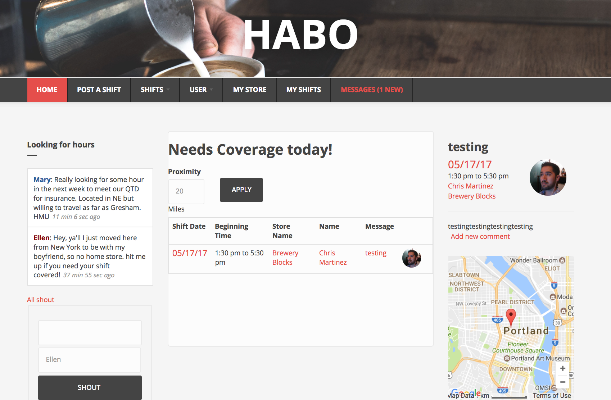
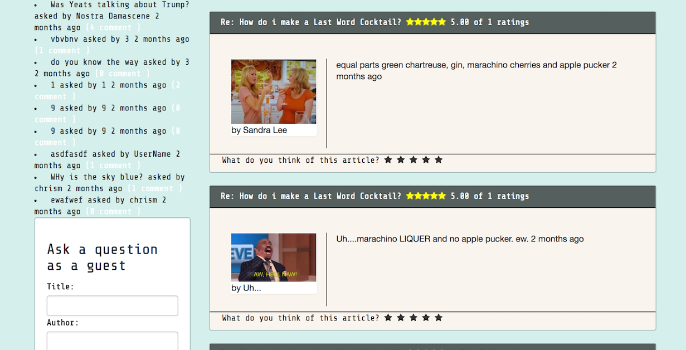
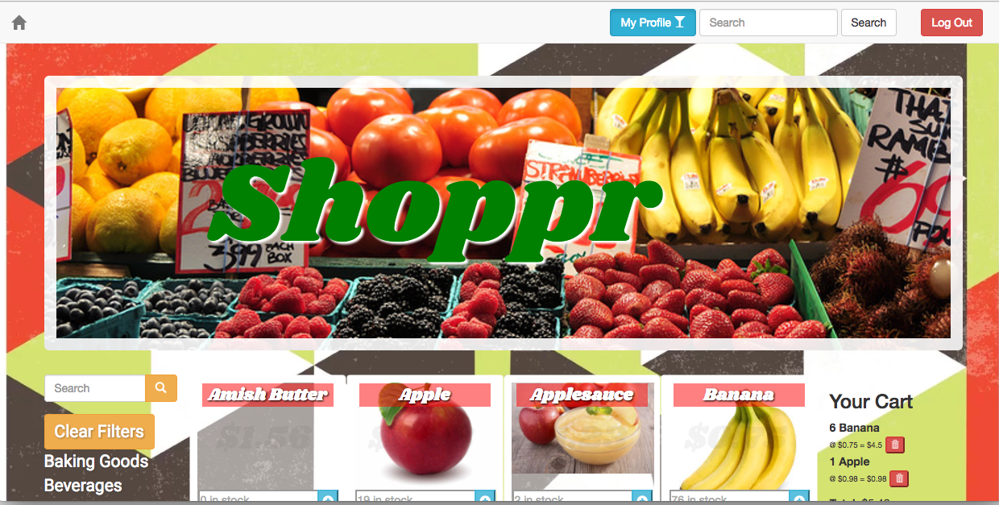
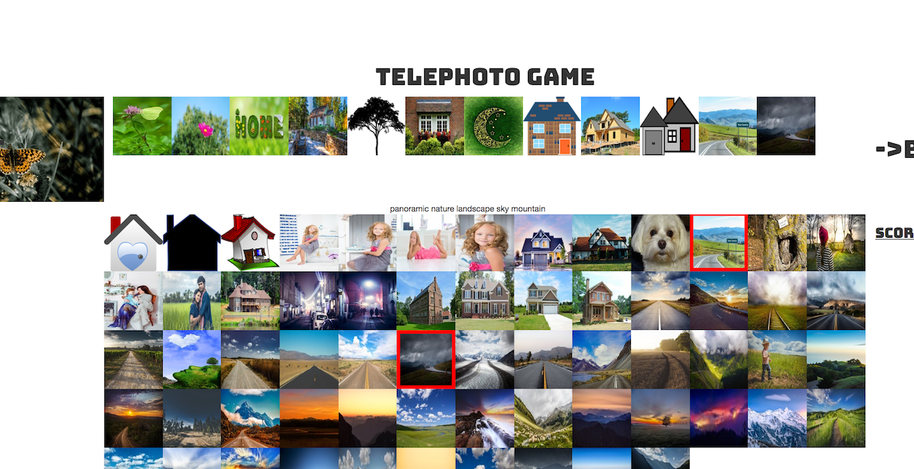

HABO
LIVE! While every Starbucks barista has a home store, they are free to cover shifts at any local, company-owned store with the same base pay rate. This is tremendously helpful when trying to cover shifts. On the other hands, this flexibility also helps baristas who are willing to work more than scheduled meet their financial needs. Sometimes, we reach out to people in our contacts, but sometimes we need to explore options with complete strangers, and playing phone tag and posting in Facebook groups can be time consuming, and often enough, our needs still go unmet.
HABO is my attempt to streamline the process and provide a central solution for swapping shifts
Being a problem-drive project turned out to actually be really rewarding process, as I watched my project turn from an idea, to user stories, to actual code. Conversely, I have tried to keep a product that is easy to use and as uncluttered as possible. It's success rides on its ability to relay relevant information to the user.
Feel free to demo HABO and even POST A SHIFT you'd like to give up or shout out on the left if you're Looking for Hours. Check out the views offered under SHIFTS, play with the distance filter, or perhaps you'd like to see all shifts on a MAP of Portland. This site is currently not being used by baristas, so have don't worry about deleting anything. Click on any preview text in the Message column and see an expanded version on the right side. Click the preview text again and see the store on a map.
You will need the folling information to demo the project:
User: demo Password: habodemo
Projects
Blorplr
 LIVE!The assignment was to make a question and answer board using the Ember framework for javascript, demonstrating an assortment of Ember's features, including nested routing, helpers, computed properties, and working with an API call to and maintaining a database through Firebase. In addition the basic requirements, I created a custom five-star rating system with CSS hover effects and an option to either create basic member profiles (through simple database queries, ie, not a practice in security) or post anonymously. I consider Blorplr an exercise in clean and colorful design and UI as well as a practice in back-end development.
Shoppr
Shoppr is a grocery store app created as a final group project for PHP at Epicodus, using the Silex framekwork and Twig templating. Shoppr allows customers to shop and search for groceries, create a virtual shopping cart, view personal shopping history, and receive emails for both registration and receipts. In addition to customer roles, the app contains a UI for full admin privileges, including, inventory, pricing and product information. Other features include email confirmations for registration viewing privileges based on roles, from admin to anonymous users. This project contains a simulation for future integration of actual credit card processing services and managing member accounts. All of these features were coded without the use of a Content Management System!
Telephoto
 LIVE!The assignment was to practice API calls and build a site with Node.js. What resulted was a game of free association, where a user clicks on an image to generate tags and generates similar pictures, with the goal of trying to obtain a picture with a destination tag in 15 clicks of less. The game uses two APIs: one to generate tags and the other to generate images.
Education
Bakersfield Community College
Associate of Arts in English and Sociology
Bachelor of Science in Sociology
Epicodus
A 25-week coding bootcamp, located in Portland, Oregon for full stack development, with a emphasis on back-end, including, but not limited to PHP, Drupal, Javascript development frameworks.
About Me
"He who wishes to be born must first destroy a world" - Herman Hesse
A reformed Luddite, a quiet observer, a well-tempered cynic, my forray into coding began the winter of 2014, while training a server. "Bedazzled"-her words, as am much more modest in person-by my breadth of food knowledge and obsession for detail, she recommended, without preface or context, I try coding. "No thanks," I said. "I don't do drugs." "Noooo...Coding." (I would later broach the topic to my parents the same way, i.e., "Hey mom, I'm really getting into codeine"). I began working with Codecademy, and while i enjoyed getting my feet wet, I wanted a deeper exploration. Treehouse soon filled the need, and I quickly embraced the process of disciplined problem solving, a process that ran antithetical to the managed calamity and distraction that defines the customer service experience. After much research and asking people in the industry, I decided to take the plunge and enroll in Epicodus.
I thrive on the spaced-out techno stylings of Nina Kraviz, caffeine, regular exercise, and passioantely flavored food. Other dabbles and loves include well-executed dinner parties, amari, beethoven, literature, sociologically oriented non-fiction, US politics, and global history, etymologies and linguisistics. I am a notorious bag of dad-jokes.